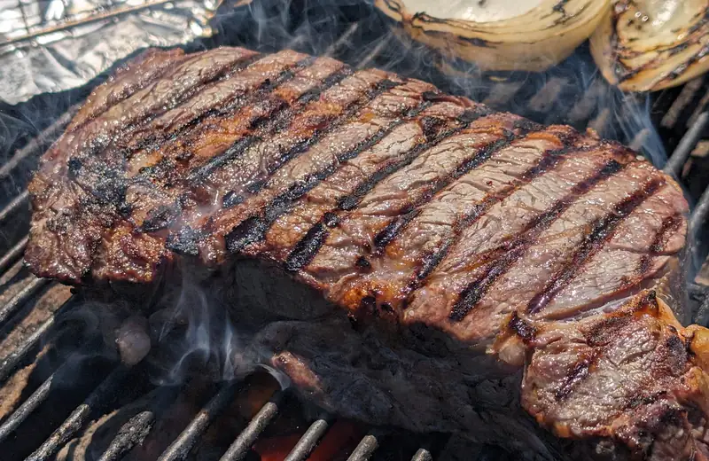
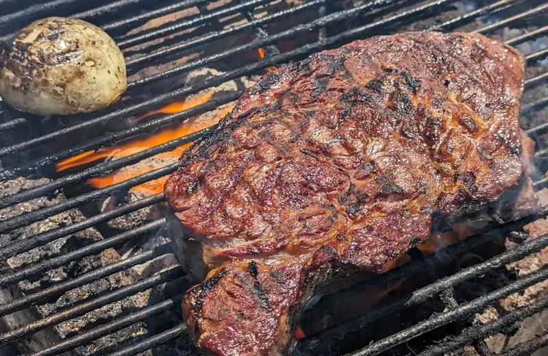
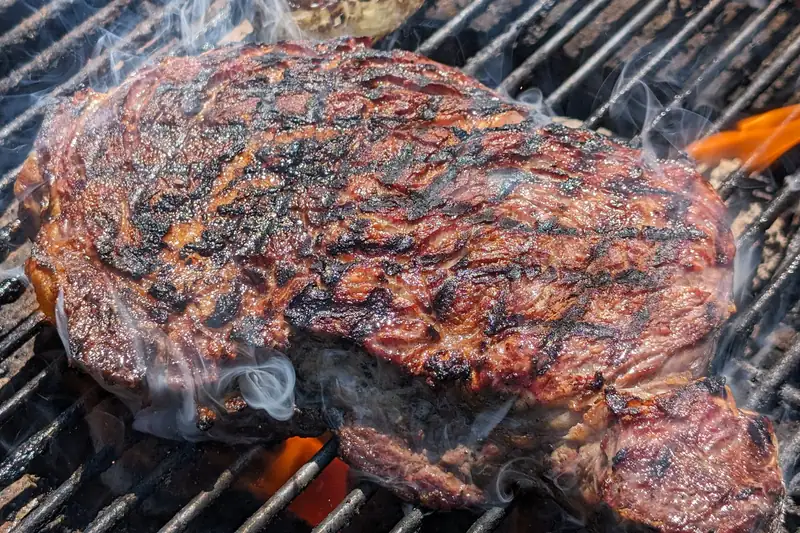

Rib Eye Sellado
A veces no se porqué a la gente le gusta complicarse la vida, o tal vez soy yo al que le gusta complicarse la vida, porque hasta ahorita, después de 3 años con un asador redondo de weber (weber kettle), no he sentido que necesite otro, al menos no hasta que sea algo empotrado y permanente, pero de pellets? na, de gas? na.. un huevo verde? bueeeno, tal vez, si es que es verdad lo que dicen de que en esos se pueden lograr temperaturas más altas que las que se pueden lograr en un kettle... ¯\_(ツ)_/¯ No se... con papel aluminio y unos,cuantos ladrillos, que apenas me voy dando cuenta que ya tenemos al menos 9 años con ellos; se pueden crear áreas en el asador para crear diferentes efectos. Una pared, para que sea como un ahumador indirecto, un hueco en medio, para que sea calor indirecto en medio, calor concentrado en medio (como para este ribeye) y te sirve para sellar y ya estando ahí los ladrillos, los puedes acomodar para un asador para yakitori. Y eso sin mencionar el rostizador que pues.. vamos, es un rostizador! Agregale leña para ahumar y rostizar al mismo tiempo y n'ommmmbre... Pero bueno.. El ribeye, un poco oportunista la cosa, porque estaba en la sección de liquidación de carnes. Con un poco de sal un rato antes de prender el fuego, secado con toallas de cocinas antes de poner al fuego, lo estándar, digamos... luego 3 (o 6?) vueltas cada 60 segundos, para un total de 3 minutos por lado con el carbón a todo lo que dé.
  
{kind=link}
{kind=link}
{kind=link}
Escucha nom'as como chilllllllla!